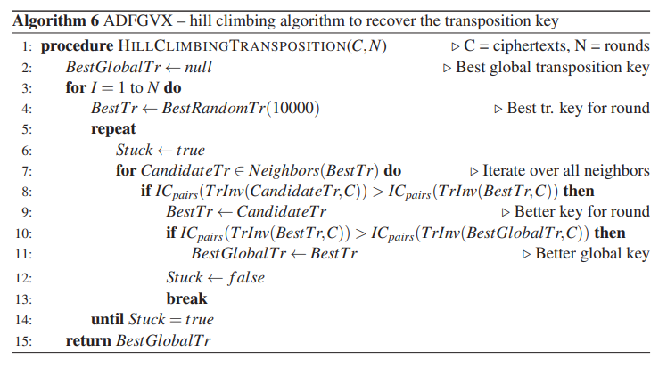

1. Zastosowanie oraz złamanie szyfru ADFGXV#
Szyfr jest oczywiście Niemiecki z okresu I Wojny Światowej złamał go Francuski kryptolog porucznik Georges Painvina. Na początku Painvin zdołał jedynie ustalić, że szyfrowanie opiera się na szachownicy Polibiusza, a do szyfrowania używane są klucze dzienne. Okazało się, że niektóre z wiadomości nadawanych tego samego dnia miała identyczne początki. Jednocześnie wyodrębnił litery służące do szyfrowania (ADFGVX), a następnie sprawdził jak często występują poszczególne pary liter. Najczęstszą występującą kombinacją było DG – wywnioskował stąd, że jest to litera e, która w języku niemieckim występuje najczęściej. Na podstawie dalszej analizy statystycznej udało mu się zrekonstruować całą tablicę. Dzięki temu był w stanie łamać klucze dzienne niemieckich szyfrantów. Od 1 czerwca przechwytywane szyfrogramy zawierały dodatkową literę – V. Oznaczało to, że Niemcy zmienili szyfr – była to nowa wersja, ADFGVX. Ponownie, wykorzystując analizę statystyczną, Painvin odtworzył szachownicę służącą do szyfrowania.
2.Algorytm deszyfrujący przedstawiający implementację#
Algorytm wspinaczkowy / Każda runda rozpoczynamy od fazy wstępnej, BestRandomTr(10000), która wybiera najlepszy klucz od 10 000 losowych klawiszy. W fazie wstępnej, a do wspinaczki, algorytm wykorzystuje specjalistyczną metodę punktacji ICpairs, który jest oparty na Indeksie Zbieżności (patrz punkt 3. 2. 3 który załączam poniżej
Przez atak wyłącznie na szyfrogram nie jesteśmy w stanie poznać treści tekstu jawnego, mimo, że zwykle język tekstu jawnego jest znany. Jednym z prostych sposobów oceny potencjalnego odszyfrowania jest zliczenie liczby słów ze słownika, które pojawiają się w potencjalnie odszyfrowanym tekście. Metoda ta ma jednak wadę, ponieważ aby słowo zostało poprawnie odtworzone, konieczne jest dokładne odtworzenie pewnej liczby kolejnych znaków (liter słowa) w tekście. Metoda ta ma bardzo niską odporność na błędy klucza, co oznacza, że każdy klucz z więcej niż kilkoma błędami będzie miał wynik równy zero lub bliski zeru. Z drugiej strony, metoda ta jest niekompletna, ponieważ jeśli odszyfrowany tekst zawiera dużo słów ze słownika, to kandydat z większą liczbą poprawnych elementów w kluczu jest bardziej prawdopodobny niż kandydat z mniejszą liczbą poprawnych elementów w kluczu, który odszyfrowuje tylko niewielką liczbę słów ze słownika.
Inna funkcja oceny polega na zliczaniu wystąpień każdego pojedynczego znaku (monogramów) i porównaniu tej liczby z częstością monogramów w dużym korpusie języka docelowego. Na przykład w typowym angielskim tekście spodziewa się, że wystąpią częściej litery E lub T niż litery Q i Z. Ta metoda jest bardziej odporna na błędy deszyfrowania, ponieważ nie wymaga dokładnego odtworzenia kolejnych znaków. Z drugiej strony, funkcje oceny oparte na statystykach monogramów są mniej wybiórcze niż te oparte na słowach. Kandydat na klucz, który ma bardzo mało poprawnych elementów, może mimo to odszyfrować szyfrogram w taki sposób, że otrzymany tekst zawiera mieszaninę liter z częstościami podobnymi do tych występujących w języku docelowym, ale w większości są one umiejscowione w niewłaściwych miejscach. Taki klucz uzyska wysoką wartość punktową dla monogramów, nawet jeśli ma dużą liczbę błędów. Tekst mówi o metodzie oceny poprawności klucza w kryptoanalizie, która polega na użyciu statystyk n-gramów. N-gramy to sekwencje liter o długości n, takie jak bigramy (2 litery), trigramy (3 litery) czy czwórki (4 litery), a nawet pięciogramy i sześciogramy. Stosując tę metodę, liczy się liczbę wystąpień każdego n-gramu w zaszyfrowanym tekście i porównuje się ją z częstotliwościami n-gramów w danym języku. Im większa długość n-gramu, tym bardziej wybiórcza jest funkcja, ale tym mniej jest odporna na błędy klucza. Metoda oparta na bigramach jest mniej odporna na błędy klucza niż metoda oparta na monogramach, ale bardziej wybiórcza, ponieważ polega na sekwencjach dwóch liter.
Istnieją dwie główne metody obliczania funkcji oceny opartych na n-gramach. Oznaczamy prawdopodobieństwo wystąpienia i-tego n-gramu w języku jako Gi. Dla hipotetycznego odszyfrowania P oznaczamy częstotliwość względną i-tego n-gramu jako Fi, gdzie Fi = ni / N, ni to liczba wystąpień i-tego n-gramu w P, a N to długość P. Pierwsza metoda polega na obliczeniu sumy kwadratów różnic między rzeczywistą częstotliwością każdego n-gramu a jego oczekiwaną częstotliwością (w języku), jak przedstawiono poniżej:
 /
/
Podsumowując, tekst mówi o dwóch podejściach do obliczania funkcji oceny opartych na n-gramach. Pierwsze podejście polega na obliczeniu sumy kwadratów różnic między rzeczywistą częstością występowania każdego n-gramu a jego oczekiwaną częstością w języku. Drugie podejście, proponowane przez Sinkova, polega na używaniu logarytmów wartości prawdopodobieństwa n-gramów. W większości wykorzystywane jest drugie podejście, ponieważ pozwala ono na bardziej efektywne algorytmy niż w przypadku pierwszego podejścia. Sumowanie logarytmów prawdopodobieństw bigramów jest równoważne obliczaniu logarytmu ich iloczynów. Obie metody zostałt zaiplementowane w opensourowwym programi CryptoTool 2.1 który może pobrać każdy użytkownik oraz pobawic się trochę róznymi szyframi klasycznymi.
Funkcje oceny, które służą do odkrywania tekstu zaszyfrowanego, mogą być oparte na analizie n-gramów lub słów. Takie funkcje zazwyczaj są specyficzne dla danej język, a ich efektywność zależy od charakterystyki języka. Istnieją również inne funkcje oceny, które nie są związane z konkretnym językiem, ale są oparte na wspólnej charakterystyce wszystkich języków, jaką jest redundancja. Redundancja to stopień, w jakim tekst w danym języku można skrócić bez utraty jakiejkolwiek informacji. Redundancja może być wyrażana poprzez częstość występowania liter lub n-gramów w danym języku. Języki naturalne charakteryzują się dużą redundancją, co stanowi podstawę dla skutecznych algorytmów kompresji tekstu. Dla tekstu zaszyfrowanego, dobrze zaprojektowany szyfr powinien być w stanie ukryć wszelkie wzorce statystyczne języka, w tym redundancję. W przypadku klasycznych szyfrów było to trudne, a nawet niemożliwe do osiągnięcia przed rozwojem nowoczesnej kryptografii, z wyjątkiem szyfru jednorazowego.
Najbardziej znana funkcja oceny, która opiera się na redundancji językowej i nie wymaga specyficznych dla języka statystyk. Jest to Index of Coincidence (IC), wprowadzony przez Williama F. Friedmana i jest prawdopodobieństwem, że dwa losowo wybrane znaki w tekście będą identyczne. Formalnie, IC jest definiowany jako:
 /
/
Ważną charakterystyką IC monogramów jest to, że jest on niezmienny dla substytucji monoalfabetycznych. Oznacza to, że jeśli zastosujemy substytucję, każdy monogram zostanie zastąpiony przez swój odpowiednik, ale suma iloczynów pozostanie taka sama, chociaż w innej kolejności. IC nie jest ograniczony do monogramów i może być stosowany również dla bigramów i wyższych n-gramów. W tekście wspominane są funkcje oceny IC bigramów i quadgramów, które zostały wykorzystane do kryptoanalizy szyfru ADFGVX.
IC jest powszechnie stosowany do kryptoanalizy klasycznych szyfrów, takich jak Enigma opisnay w książce w sekcji patrz sekcja 3.5.1, Purple (patrz sekcja ksiązki 3.5.2), ADFGVX , Hagelina M-209 (sekcja 7.3.2.5) i Chaocipher (sekcja 8.4.2). IC jest uniwersalnym narzędziem do oceny prawdopodobieństwa, że dany tekst jest w określonym języku, co umożliwia atak na monoalfabetyczne szyfry. W przeciwieństwie do n-gramów, IC pozostaje niezmieniony przez monoalfabetyczną substytucję, co czyni go przydatnym nawet wtedy, gdy monoalfabetyczna substytucja jest połączona z inną metodą szyfrowania. Na przykład, IC jest stosowany do poszukiwania klucza transpozycji w szyfrze ADFGVX. Scoring IC dla tekstów zmonoalfabetyzowanych jest niemożliwe ze względu na zmianę n-gramów, które zostały zmienione przez substytucję, co nie pozwala na dopasowanie częstości n-gramów do oczekiwanych częstości w danym języku.
Główną zaletą IC jako funkcji oceny jest zwiększona odporność na błędy klucza, gdy jest stosowana w klasycznych szyfrach. Większość innych funkcji oceny staje się już nieefektywna powyżej niewielkiej lub umiarkowanej liczby błędów klucza. W przeciwieństwie do tego, IC często jest w stanie odróżnić klucz z relatywnie dużą liczbą błędów od podobnego klucza z mniejszą liczbą błędów. Dlatego IC jest często wybieraną funkcją punktacji we wczesnych etapach poszukiwania klucza, gdy początkowe klucze mają dużą ilość błędów. IC jest mniej skuteczny i często niewystarczająco selektywny w późniejszych etapach poszukiwania klucza, gdy klucz bieżący jest bliski poprawnemu kluczowi i ma bardzo mało błędów. W takim przypadku funkcje punktacji oparte na n-gramach będą bardziej skuteczne w celu osiągnięcia poprawnego klucza, ponieważ są bardziej selektywne.
Innym ograniczeniem związanym z funkcjami oceny opartymi na IC jest większa prawdopodobieństwo wystąpienia fałszywych wysokich wyników podczas poszukiwania klucza, czyli wysokiego wyniku IC przydzielonego kandydatowi na klucz, który jest głównie niepoprawny. Ten fałszywy, wysoki wynik IC może być nawet wyższy niż IC prawidłowego tekstu jawnego. Dotyczy to również innych funkcji oceny o dobrej odporności na błędy klucza, np. jednoliterowych analiz. Fałszywe wyniki są bardziej prawdopodobne w przypadku krótkich szyfrogramów i mniej prawdopodobne w przypadku dłuższych.
Lecz w przeciwieństwie do standardowego IC, nie jest obliczany na podstawie monogramów. Zamiast tego jest on obliczany dla każdego kandydującego klucza transpozycji CandidateTr, stosujemy odwrotność tego klucza transpozycji („anuluj transpozycję”) do kod C, czyli TrInv(CandidateTr,C). Następnie dzielimy wynikową sekwencję symboli ADFGVX na pary (sąsiadujących symboli) i obliczamy ich indeks zbieżności, który jest, ICpairs(). Należy pamiętać, że jeśli klucz kandydata jest równy poprawnemu oryginalnemu kluczowi szyfrowania (CandidateTr = Ktr), każda para w sekwencji po cofnięciu transpozycji reprezentuje pojedynczy oryginalny symbol tekstowy (A-Z, 0–9) po podstawieniu. Jako (monogram) IC zwykłego tekstu P zaszyfrowane z podstawieniem monoalfabetycznym jest zawsze równe IC zwykłego tekstu, w przypadku poprawnego klucza transpozycji kandydata (CandidateTr = Ktr) Relacja ta jest kluczem do realizacji tego ataku „dziel i rządź”, wykorzystując ICpairs, który pozwala na odzyskanie klucza transpozycji z pominięciem podstawienia klucz (Brutal Force). Podczas szyfrowania faza substytucji ADFGVX mapuje symbole zwykłego tekstu na pary symboli ADFGVX. Faza transpozycji dzieli te pary symboli, tworząc więcej przypadkowych kombinacji. Im bardziej algorytm jest w stanie zmienić położenie elementów tych oryginalnych par, używając częściowo poprawnego klucza transpozycji kandydata, tym wyższa wartość ICpairs powinna być. Najwyższa wartość ICpairs jest oczekiwana, gdy klucz transpozycji kandydata jest poprawny. Zaimplementowaliśmy zestaw transformacji używanych przy każdej iteracji i zastosowaliśmy do bieżącego klucza transpozycji (NeighborTrKeys(BestTr)).Transformacje te składają się z:
Proste zamiany dowolnych dwóch elementów w kluczu transpozycji.
Swapy dowolnych dwóch segmentów (lub różnych długościach) kolejnych elementów w klucza.
Obracanie (cyklicznie) segmentu czyli kolejnych elementów w kluczu (w dowolnej pozycji, i różnej długości).
Odwrócenie klucza transpozycji, tak aby ostatni element stał się pierwszym i tak dalej.
Zamiana elementów każdej pary w kluczu. W przypadku klucza o nieparzystej długości, pomińmy ostatni element klucza.
Pierwsze trzy typy – pojedyncze swapy i transformacje segmentowe, nie mają charakteru zakłócającego. Co do w przypadku szyfru transpozycji kolumnowej (sekcja 5. 3. 2)(“Krystian tu dopisze”), transformacje segmentów są obowiązkowe, a nasz algorytm nie powiedzie się, jeśli je będziemy usuwać. Dwa ostatnie typy były empirycznie odkryte. Zanim je wprowadziliśmy wspinaczka często utknęła na literach z wysokim wynikiem, które były podobne do poprawnego klucza, ale z kluczowymi elementami odwróconymi, lub z każdymi dwoma kolejnymi elementami odwróconymi.Algorytm ten sprawdza się dobrze dla kluczy transpozycji o nieparzystej długości. W przypadku kluczy transpozycji o parzystej długości często się nie powiedzie. Aby zilustrować problem, rozważamy następujący klucz transpozycji z 8 elementami (równej długość): Ktr = (4,6,2,3,7,5,1,8), a niektóre klucze zastępcze, Ksub. Szyfrujemy zwykły tekst P, najpierw nakładamy Ksub i otrzymujemy sekwencję symboli ADFGVX, gdzie każda para reprezentuje oryginalny symbol tekstowy. Następnie aplikujemy Ktr i aby uzyskać kod C. Zastosujemy algorytm wspinaczki do tego szyfru adn zakładamy, że znamy długość klucza transpozycji, |K| = 8. Na pewnym etapie wspinaczki, możemy uzyskać następujący klucz kandydata: CandidateTr = (7,5,4,6,1,8,2,3). Zauważmy, że w kluczu kandydujący, oryginalne pary kluczowych elementów, np. (4, 6) lub (2, 3), zostały poprawnie zrekonstruowane, ale względna kolejność par jest błędna. Ze względu na charakter transpozycji kolumnowej, jeśli zastosujemy odwrotność CandidateTr, czyli TrInv(CandidateTr,C), otrzymamy sekwencję symboli ADFGVX, w której dwa elementy każdej z oryginalnych par ADFGVX (po podstawieniu, ale przed transpozycją), są teraz obok siebie. W rezultacie ICpairs(TrInv(CandidateTr,C)) = IC(P), chociaż KandydatTr!(różni się od Ktr) = Ktr. Innymi słowy, mamy fałszywie wysokie ICpairs. W wyniku tego zjawiska nie możemy polegać tylko na ICpairs jako funkcji scoringowej, aby odzyskać klucz transpozycji o równej długości. Gdy długość klucza jest nieparzysta, zjawisko to nie występuje. Aby poradzić sobie z literami transpozycji o równej długości, dostosowaliśmy funkcję scoringową, tak aby łączny poprzedni pomiar (ICpairs) z IC czworokątów (ICquads). Dzielimy na sekwencje TrInv(CandidateTr,C)(otrzymamy po cofnięciu transpozycji) do czworokątów dla Symboli ADFGVX obliczyć ich IC. Zauważ, że jeśli klucz kandydata jest poprawny, to jest CandidateTr = Ktr, każda czwórka symboli ADFGVX (po cofnięciu transpozycji) reprezentuje zatem bigram symboli tekstowych (przed zastąpieniem). Po zmodyfikowaniu algorytmu za pomocą tej ulepszonej metody punktacji, algorytm wykonał również dobrze transpozycję otrzymaliśmy klucze o równej długości. Aby ocenić wydajność algorytmu, przeprowadziliśmy następujący eksperyment. Podzieląc kryptogramy na grupy według kluczy, którymi były zaszyfrowane, uruchomiliśmy algorytm na pierwszych n kryptogramów każdej grupy, zaczynając od n = 10, i redukując n za każym razem, aż algorytm nie odzyska klucza. Zamiast wybierać najdłuższy lub najczystsze kryptogramy z każdej grupy, właśnie wybraliśmy pierwsze n kryptogramów z każdej grupy.Dlatego n kryptogramów wybranych z każdej grupy (klucza) może się różnić pod względem długości lub liczba błędów transkrypcji. W tabeli 6. 1 pokazujemy minimalną liczbę n kryptogramów wymagane przez algorytm, aby umożliwić pełne odzyskanie klucza. Widać, że na 6 klawiszy z 14, tylko 2 kryptogramy o łącznej liczbie 388 do 566 symboli ADFGVX były wystarczające do odzyskania klucze transpozycji o długości od 16 do 23. Najgorszy przypadek był z kluczem długości 18 co wymagało 5 komunikatów o łącznej liczbie 1000 symboli ADFGVX.